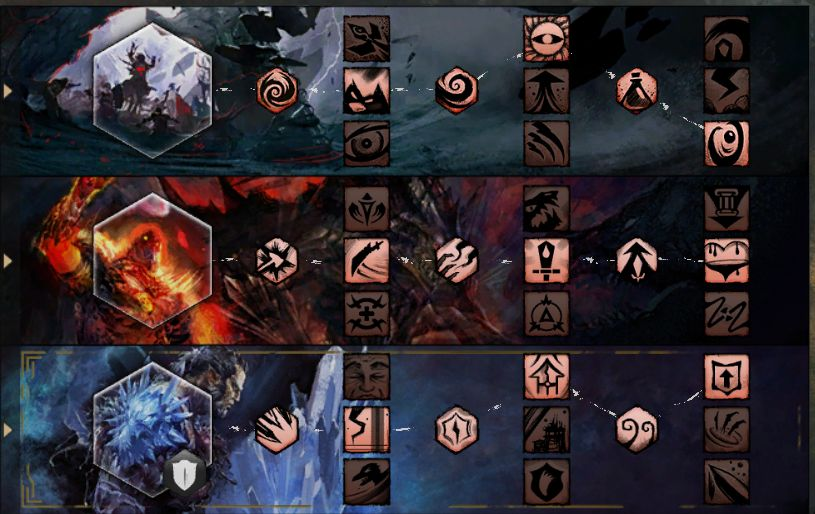
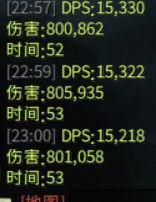
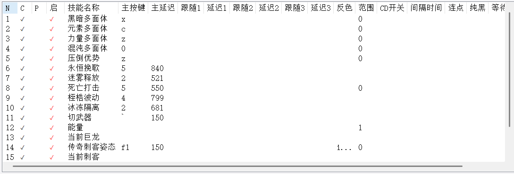
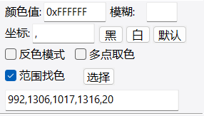
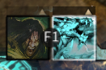
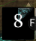

野外，三剑，直伤预告，新手推荐
|黑暗多面体，元素多面体，力量多面体，混沌多面体，压倒优势，永恒挽歌，迷雾释放，死亡打击，桎梏波动，冰冻隔离，切武器，能量=当前巨龙=传奇刺客姿态，能量=当前刺客=传奇巨龙姿态，普攻||
黑暗多面体,x|元素多面体,c|力量多面体,z|混沌多面体|压倒优势,z|永恒挽歌,5,840,,,,,,,,,,,,,,,,,触发,0,,0,,,15000|迷雾释放,2,521,,,,,,,,,,,,,,,,,触发,0,,0,,,3000|死亡打击,5,550,,,,,,,,,,,0,,,,,,触发,0,,0,,,15000|桎梏波动,4,799,,,,,,,,,,,,,,,,,触发,0,,0,,,15000|冰冻隔离,2,681,,,,,,,,,,,,,,,,,触发,0,,0,,,5000|切武器,`,150|能量,,,,,,,,,,,,,1,992,1306,1017,1316,20|当前巨龙|传奇刺客姿态,f1,150,,,,,,,ifnot|当前刺客|传奇巨龙姿态,f1,0,,,,,,,ifnot|普攻,1
[&DQkDNg8qNBbcEdwRBhIrEisS1BHUEQYSyhHKEQIBAQIGEisS1BEGEisS1BECWgAyAAA=]
衣服神谕，首饰狂战，武器狂战，确保60+的增益效果，也可全神谕套，武器大剑+双剑，武勇、冲击、空气，萨奇古物

回血来源，萨奇古物+唤魂线迷雾翻腾被动吸血效果。
经过魔泉事件测试，可全程站桩，只需要躲多人黄圈，其余时间全部满血。
这套bd适合野外多人，以及中等威胁以下的野外区域,

取色方面，武器+通用技能都是技能本身取色。

能量，使用范围找色，获取能量条0%~10%区域
表示范围内存在白色，为能量用尽。

能量=当前巨龙=传奇刺客姿态
能量=当前刺客=传奇巨龙姿态
当前姿态，表示当前职业姿态的图标，F1右边那个图标，用于判断当前姿态是哪个

传奇刺客姿态 跟 传奇巨龙姿态 都是F1左侧图标，勾选反色，获取了冷却状态下，12点左侧那个黑色，表示当12点不为黑的时候，切姿态。
以上循环是基于当前版本简易教学，用于了解范围找色，反色，等条件的判断。
评论列表（19）
M佬能不能出一个剩余计时˂˂的功能
@鱼c 具体需求是什么场景
@melis 比如燃火书页里的技能剩余cd小于多少毫秒就进书页会方便很多
前排提示一定要看清楚介绍，这个BD只能混事件，打不了野外
能量用尽就是不切 怎么个情况啊？ 最新版本的
@煎饼果子 框选能量条，范围找色，白色，模糊度20
符文是什么
@黄桃 猎龙、学者
@melis 谢谢，法印我看只写了三个，双剑上是空气+冲击？大剑是勇武+冲击？
@黄桃 双剑才用空气，速度快
大佬，还会有三剑裁决吗？
话说大佬能在最后巨龙姿态结束的时候，喷一下精英技能麽，我觉得那个龙很帅，我是设置那个切姿态能量=10=放技能，好像放不出来
@我是字母 能量=混沌多面体二段，放到循环最前面，延迟680
@melis 好滴，大佬~爱你哟
感觉这个很好混野外事件，哈哈~又可以用新武器
可以用在本里面急速dps么
@圣光 团队回血压力不大的可以用，这是纯输出，没有团队回血手段。
@melis 急速dps就是刷急速和dps,奶和稳固之类的给敏捷奶就好了
大佬牛皮